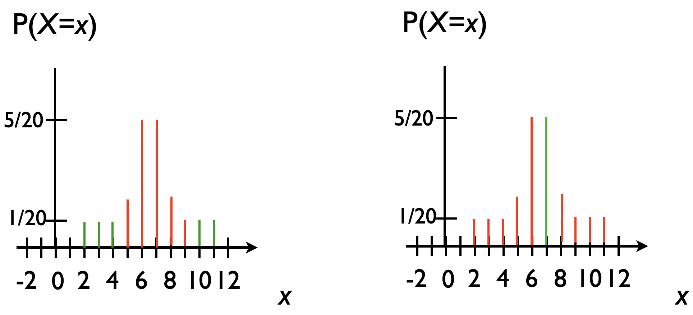

Credible sets
Outline
Topics
- Nominal coverage.
- Common credible sets:
- Quantiles.
- Highest-density sets.
Rationale
As we have seen at the beginning one motivation for Bayesian methods is that they allow us to quantify uncertainty in our predictions. Credible sets is one way to convey this uncertainty quantification.
Nominal coverage
The “nominal coverage” is the basic property that we use to construct credible sets:
- You are given a level, typically \(95\%\) or \(90\%\), denoted \(1-\alpha = 0.95\) or \(1-\alpha = 0.9\)
- Intuition: we want to find a set \(T\) such that we are \(95\%\) sure that the true \(x\) is in \(T\).
- Ideally, we would want to find a set \(T\) such that \(\sum_{x \in T} p(x) = 0.9\)
- For discrete distributions, there may not be a solution, but let us ignore that issue for now (suppose each probability is very small and replace \(=\) by \(\approx\) up to an error bounded by the largest individual probability)
- For continuous distributions that will not be an issue
- Another problem: there are many solutions! Some of them might appear weird, e.g. include points of probability zero!
- Example: both sets shown in red contain \(75\%\) of the mass.

Quantile-based credible interval
The simplest way of building credible intervals:
- suppose you want a \(90\%\) credible set
- we will remove \(10\%/2 = 5\%\) on each side
- remove sticks from the very left moving to right
- each time you remove one, add its length to a counter…
- until that counter hits \(5\%\).
- then do the same from very right moving to the left
- the sticks left form \(T\).
Highest Density Set
- Highest Density Set: pick a solution with the least number of points \(|T|\)
- To handle discrete models: \(\text{argmin}\{ |T| : \sum_{x \in T} p(x) \ge 0.9\}\).
- Still not unique in some corner cases, but good enough
Example:
- the left one below is a highest density set
- note the one on the right has more points in it, \(5 < 9\).
Challenge: implement a function taking as input a posterior PMF (as a vector), a level, and returns an HDI. Details here.
Credible interval
When we move to continuous random variables, \(T\) will often be an interval, i.e. \(T = [L, R]\) for some left and right end points \(L\) and \(R\). In such case, \(T\) is called a credible interval.
High Density Interval
Similarly, a High Density Interval (HDI) is a shortest interval (i.e. minimizing \(R - L\)) containing a prescribed probability mass.